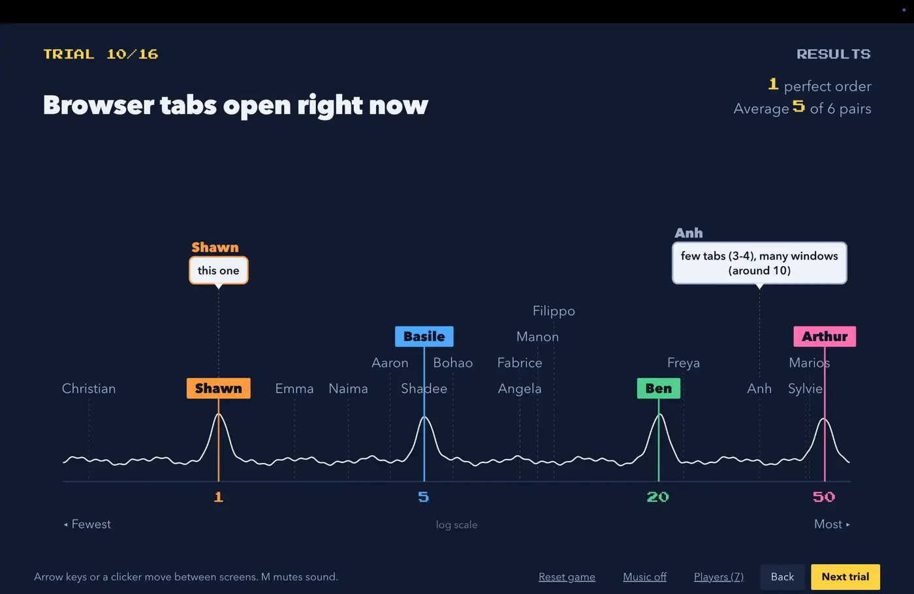
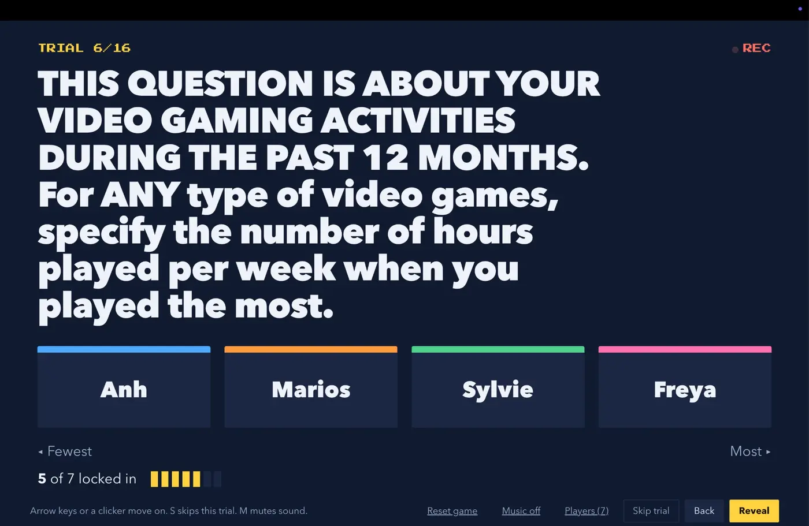

Game design · 2026
Line Up
One of my two farewell gifts to the lab: a party game built from my colleagues’ own answers, and a homage to eight years in the lab, full of references to my PhD. Designed and built in under two days, with Claude.
- Role
- Concept, game design and build
- Context
- Annual retreat, Brain & Learning Lab, October 2026
- Players
- About 20 people, in 5 teams
- Built
- In under two days, with Claude; a web app joined by QR code

The brief
The lab retreat is a yearly gathering, mostly given over to writing, work and talks. At my first one I led an improv session; after that, like everyone else, I stuck to the programme. Once my thesis was done in March 2025, the energy to give back in connection and play returned: that year I ran a simple Kahoot on fun facts, where you guessed whose fact it was. In 2026 I levelled up. It was my last retreat, with my new job already lined up, and I wasn’t even sure I could attend, so it became a farewell gift.
The game
I decided at the last minute, so the questionnaire went out during the retreat itself: yes/no questions and scales. Line Up turned the answers into 16 trials of two kinds:
- Guess the percentage: how many of us said yes? “Will Fabrice be on time at the next retreat?”
- Rank four colleagues on a scale: houseplants kept alive, browser tabs open, hours of gaming. One point for every pair you put the right way round.
Every lab member appeared equally, so everyone felt included, with four people spread far enough apart on each scale to keep the ranking interesting. Answers arrived live as teams locked in, and some came with comments that popped up at the reveal.
The questions mixed a few inside jokes with things anyone could play, since some players were alumni or guests who no longer knew the lab well. Fun, but always safe: nothing that could embarrass or expose anyone.



A homage, built on my research
The reveal is an EEG-style trace: each name lands as a peak, with the same oddball tones as my thesis experiment. Trials are numbered like an experiment, and a “REC” light blinks while teams lock in. One prompt was lifted word for word from a questionnaire the lab had designed, gloriously long, with its co-authors in the room. The rest is pure arcade: 8-bit music, pixel fonts, and a podium with confetti.
Iterating where it mattered
As in any project, I started with the intention: what the game had to feel like for the people playing it. Because I knew exactly what I wanted from the core mechanics, I could write very precise specifications, then take the time for many iterations. Most went into usability, making it foolproof on a phone:
- I switched from tapping to dragging, which is far more intuitive for ranking;
- selecting, locking and releasing a name became unambiguous;
- every step gave clear feedback: the ingredients of flow and good game design.
On the big screen, I chose when to move on to the next trial, and could step back and forth.
On the day
The game ran as a web app on my laptop, with players joining by QR code. The venue Wi-Fi was too poor, so I switched to my phone’s hotspot, which allowed only five devices. We played in five teams instead of individually, and that turned out better: about twenty people, debating every ranking together.
What I learned
A clear intention is what made it fast. Knowing what the game had to feel like let me spend my limited time on the parts players would touch. And a technical failure can turn into a design gift: the five-device limit turned a solo quiz into a team conversation.